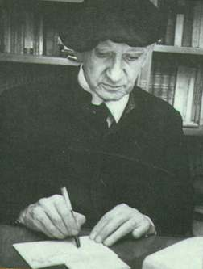

1. Formación (1899-1935)
Leonardo Luis Castellani Contepomi nace en Reconquista, (Santa Fe, Argentina) el 16 de noviembre de 1899.  Pierde a su padre -periodista y maestro librepensador- en la niñez, muerto en una reyerta política; también pierde en su niñez el ojo izquierdo, que será reemplazado por uno de vidrio. Termina el bachillerato en Santa Fe, y en 1918 ingresa al noviciado jesuita de Córdoba. Estudia letras, filosofía y teología en Santa Fe, luego en Buenos Aires y comienza a escribir (Camperas). Vistas sus grandes dotes intelectuales, es enviado en 1929 a Europa a proseguir sus estudios.
Es ordenado sacerdote (1931), y estudia Filosofía y Teología en la Gregoriana de Roma, Después estudia Psicología en la Sorbona de París. Tras unos meses en Alemania, en 1935 vuelve a Argentina.
2. Primera época (1935-1946)
Desde su regreso a Europa y hasta 1946 trabaja en docencia y periodismo ; escribe más de 12 libros y traduce la primera parte de la Suma Teológica de Santo Tomás. De esta época son los cuentos reunidos en 'Historias del Norte Bravo', 'Martita ofelia y otros cuentos de fantasmas', 'Las muertes del Padre Metri'; ensayos y artículos reunidos en 'Las canciones de Militis', 'Crítica literaria', 'El nuevo gobierno de Sancho'. Participa activamente en revistas y diarios (Criterio, La Nacion, Cabildo, Tribuna) e incursiona en política, llegando a ser incluido en la lista de diputados del partido nacionalista en 1946. Estas actividades y sus actitudes críticas hacia la educación y las estructuras sociales, políticas y religiosas comienzan a ocasionarle enemigos y dificultades.
3. La crisis: Manresa (1946-1949)
Sus superiores religiosos lo presionan para que abandone la Compañía de Jesús (la orden jesuita); se niega, y las sanciones y presiones van en aumento. Viaja a Europa para intentar aclarar su situación, sin éxito. Es recluido en Manresa (España) durante dos años, mientras su salud física y psíquica se derrumba. Al borde de una neurosis y en medio de una aguda crisis espiritual, consigue huir y vuelve en 1949 a Buenos Aires. Es entonces expulsado de la Compañía y suspendido como sacerdote.
Tiene entonces 50 años, su salud decaída, el alma lastimada en lo más profundo, difamado, con su carrera intelectual tronchada y sin medios de vida.
4. Segunda etapa (1950-1969)
Es acogido por el obispo de Salta, donde vive entre 1950 y 1951, enseñando y escribiendo. Vuelve en 1952 a Bs As, y dicta cursos de filosofía y conferencias varias. El período más difícil de su vida ha pasado, y aunque las heridas no cerrarán nunca, comienza a ordenar sus papeles e inicia una nueva etapa en su producción intelectual, que se revelará aún más productiva y profunda que la primera.
En este tiempo escribe 'El apocalipsis de San Juan', 'Cristo vuelve o no vuelve?', 'El ruiseñor fusilado/El místico' , 'Los papeles de Benjamín Benavídez', 'El evangelio de Jesucristo', 'Las parábolas de Cristo', 'Su majestad Dulcinea'...
En 1966 se le restituye el ministerio sacerdotal. En 1967 funda la revista Jauja, que dirige hasta su cierre, en 1969.
5. El ocaso (1969-1981)
El fin de la revista Jauja coincide con el fin de una década en que mueren otras esperanza;: han pasado el mayo francés, la primavera de Praga, el Concilio Vaticano II y la llegada del hombre a la luna... Castellani, sin dejar de ser un referente entre los sectores más tradicionales del catolicismo, y una figura destacada del nacionalismo argentino, se aparta cada vez más de la actividad política y, en general, de la sociedad. Volcado a su interioridad religiosa, su actividad se limita a escribir libros y dar conferencias. Profesa una gran devoción por el filósofo luterano Soren Kierkegaard, a quien dedica 'De Kierkegord a Tomas de Aquino', uno de los principales libros de la última etapa de su vida.
Muere el 15 de marzo de 1981 en Buenos Aires.